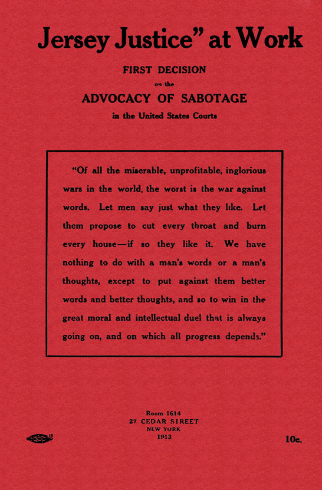

"Jersey Justice" at Work
By the IWW (1913)
The appeal now pending in the case of Frederick Sumner Boyd, convicted in Paterson, N. J., on September 30, of the charge of "advocating destruction of private property" (sabotage), is one of great importance to the working class and to every individual in America. Boyd told the striking silk workers in Paterson that if starvation forced them back to the slavery and growing degradation from which they had revolted, if their strike were lost, if the hunger of their children broke their power of resistance, they should use sabotage in the mills and in the dyeshops. Boyd was arrested, tried and convicted on two indictments, receiving a sentence of not less than one year and not more than seven years at hard labor in State's Prison and a fine of $500 on one indictment, and on the second a suspended sentence of not less than three years and six months or more than seven years at hard labor. The appeal comes up for hearing before the New Jersey Supreme Court in its February term. The case has peculiar interest in that it is the first case where sabotage has been advocated to come before the American courts, and, arising out of the Paterson silk-milt strike, it brings into strong relief the issues of the bitter class struggle that is being waged in capitalist society.
Wages Fall as Prices Rise
Twenty years ago, in the Paterson mills, wages were higher and working conditions were better than they are to-day. In the strike this year, the principal wage demand of the ribbon weavers was for the price list of 1894, in which year the weavers lost a strike, and were obliged to accept the employers' terms. During the last five years, speeding-up has grown apace, so that where formerly one weaver was operating one or two looms, in 1913 the same weaver was operating three and four looms. What has happened is described by Ewald Koettgen, who for years worked in the mills and knows the conditions from personal experience. Koettgen says: "
Fifteen years ago I had two looms. Each loom contained goods that were 18 inches wide, 6o reed, 3 threads in a dent, 90 picks to an inch, taffeta weave, 10 cents per yard. Now the weavers operate 4 looms, 36-inch goods in each loom, 6o reed, 2 thread, 64 picks, taffeta weave, 2½ cents per yard.
Five years ago messaline jobs were paid as follows: Two looms, goods 36 inches wide, 64 reed, 3 threads, 5 shafts, 104 picks, 11½ cents per yard. Now a weaver must operate four looms on the some kind of work and receives 5 cents per yard.
At 2 looms a weaver could make 15 yards per loom per day, or 30 yards on 2 looms. This makes $345 for 30 yards. Now a weaver operating 4 looms can make about 12 yards per loom, or 48 yards per day. Forty-eight yards per day, at 5 cents per yard, gives on $240. In other words, a weaver produces 18 yards more per day and is paid $1.05 less than before.
Degradation Was Progressive
While this actual reduction in wages has been going on, the cost of living has been going up. The result is that the Paterson silk workers have been deprived of the opportunity of saving against old age or sick ness; they have been unable to secure the little luxuries that make life pleasant; they have had to accept a lower standard of living; they have been unable to keep their children at school beyond the earliest working age; and the much talked of family life has been destroyed because wives and mothers have been forced into the mills to help make up the family income. Their lives are embittered by the ceaseless struggle against growing poverty.
Repeated attempts to remedy conditions have been made.
The various crafts in the industry called strike after strike, but as these were partial and unsuccessful, the workers—men, women and children—came to understand that they must all strike together, and in February, 1913, the Industrial Workers of the World organized a strike of all crafts, covering all ages, sexes, creeds and nationalities Mills in New York, Pennsylvania, Connecticut and Virginia, as well as those throughout New Jersey, were struck, and every effort was made to secure a general strike in the silk industry. At the same time the dyers in France, Germany and Switzerland went on strike and the workers presented an almost united front.
The silk workers were stronger and far better organized than ever they had been before. If they could not win the strike under such circumstances then their lot seemed hopeless But the I. W. W. contends that the strike is not the only economic weapon in the hands of labor. It advocates the use of sabotage to aid in winning better conditions, and in accordance with this declared policy of the I. W. W., and at the request of those in charge of the strike, Boyd advised the strikers to use sabotage.
What Sabotage Is
Sabotage has as many definitions as it has friends and enemies. It is usually described as the wanton, malicious destruction of property—a practice indulged in only by ignorant, angry men, and on this ground is denounced in the bitterest terms. In reality, sabotage is very far indeed from the meaningless, spasmodic destruction of property by an undisciplined and ignorant mob. In its broadest terms it may be defined as anything that the worker, acting for his class interests, can do at the point of production or distribution to hamper the processes by which profit is made and capital perpetuated and increased. It is not necessarily destructive of property. It never results in the loss of life or limb. Men who "soldier" on the job are committing sabotage. The removal of a nut from a carefully adjusted machine, necessitating its stopping while the trouble is being sought for and repaired, is an act of sabotage. Boyd in Paterson told the weavers to rub the reeds of the loom with a vinegar cloth. This causes the reeds to rust, and to clean them, a simple enough thing in itself, the loom has to be taken apart and then reassembled—a work of two or three days.
Were the railroad workers to misdirect cars, sending those intended for New Orleans to Chicago, and those intended for Los Angeles to Boston, they would be committing sabotage. Every worker who is a cog in the great modern machine of mill, factory, mine, workshop or railroad knows from his daily experience just what all this means. Any worker knows that the entire factory can be thrown into confusion at any minute if even one of the necessary cogs is thrown out of gear. If such a thing is done repeatedly, either from the engine room, affecting the entire factory, or from the individual bench, affecting only one machine at a time, shop discipline is broken and the entire process of production is paralyzed until the necessary adjustment is made.
Sabotage Kills Profits
This paralysis can be achieved without the destruction of one penny's worth of property merely by taking advantage of the technique of the machine shop. Without destroying or injuring anything, profit can be killed. The alternative before the employer is to concede the demands of the workers or to go out of business. What sabotage actually does is to bring into evidence the fact that human life, liberty and happiness are in conflict with private property rights. The workers are frequently faced with the alternative of semi-starvation continued over a series of years because of low wages, or of starving outright while on strike. Those who advocate sabotage believe that it can be made an additional weapon in the hands of the workers in their struggle for better conditions. They say: "If private property rights are in conflict with human happiness, then private property rights come second. If we must choose between injuring profits and property, or undergoing growing degradation and starvation, then we will injure profits and property." Sabotage is new only in name, and in the fact that for the first time it is being advocated openly as a class weapon to be used by all workers when they fail to secure their demands by the strike and the boycott. In the past it was a secret practice,—a thing done but not talked of. Its open advocacy involves its open use.
An Act of War
Instead of one or two men out of, say, a thousand in a mill committing sabotage, it is proposed that ALL of them use it. If there are a thousand workers in a shop, a thousand workers are advised to commit sabotage, and it is intended that the employer shall know that it will be used should he refuse the demands made by the workers for increased pay, for shorter hours, for better working conditions, for greater control of the job. Sabotage is an act of war. It is a weapon used by the workers in the merciless class war between labor and capital, between exploited and exploiter, and while that war lasts, sabotage in some form or another, openly or secretly, will be used.
Some Points in Law
The particular forms of sabotage advocated by Boyd in Paterson involve injury, not destruction, of property. The defense argued that since the statute under which the indictments were drawn penalises only the advocacy of the destruction of property, and since a criminal statute must always be construed strictly, therefore the indictments setting forth the language that Boyd used do not show any violation of the statute. For this reason, it is contended, Boyd should have been acquitted.
If this is not the proper construction of the statute, and it can be held to include language which might be construed merely into advocating injury to property, then the statute is so uncertain in its meaning as to be void.
This strict construction of the criminal statute asked for in Boyd's is based upon a fundamental legal practice that has been used very case notably in trying trust magnates under the Sherman Anti-Trust law. As a result, the magnate has usually succeeded in getting away, and the defense on this point for Boyd is virtually an invitation to the courts to administer their own laws and to follow their own practices impartially, whether the contemplated victim of the prosecution is a trust magnate or a labor organizer, or any one else.
The free speech aspect of the case is, however, of wider and much more vital significance. Both indictments upon which Boyd is convicted charge that "he did in public by speech advocate the unlawful destruction of private property." That, shorn of its legal redundancy, is all.
No charge was made that any one who heard Boyd speak committed an act of sabotage as a result of his speeches. No suggestion was made during the trial that sabotage was committed at any time. Indeed, the Judge, Abraham Klenert, specifically stated in imposing sentence that "the strikers had too much good sense" to do as Boyd advised them. In other words, no overt act of any kind followed the speeches in question, so far as the case came before the court. No injury resulted to any one, and no suggestion was made that injury had been done.
Convicted for Speaking
Boyd is, therefore, sentenced to jail for speaking. He is sentenced to jail for advocating something that, according to Judge Klenert, who imposed the sentence, his hearers thought about and decided not do. Boyd is sentenced to jail for exercising the right guaranteed by Article I of the Amendments to the Federal Constitution, which reads as follows:
Congress shall make no law respecting an establishment of religion, or prohibiting the free exercise thereof; or abridging the freedom of speech or of the press; or the right of the people peaceably to assemble and to petition the government for a redress of grievances.
In other words, unabridged free speech, free press and free assemblage are constitutional guarantees, and because of the existence of such guarantees, and only because of them, America has been regarded as the freest country in the world.
The far-reaching importance of this may be made clearer by saying that whereas in England freedom is enjoyed only by permission, in America freedom is, or is supposed to be, enjoyed by right. It is what the Declaration of Independence describes as "an inalienable right" and the Constitution guarantees it.
This is the theory and general understanding of the matter, but in practice and actual fact America has even less freedom than has England, a condition that is in direct contravention of constitutional guarantees, and has been created by the decisions of the Courts in upholding statutes in violation of the Constitution, thereby establishing precedents and a great body of "judge-made" law.
Little by little the constitutional guarantees have been invaded, and what is happening can readily be seen by studying the following statutes under which Boyd, Patrick L. Quinlan, and Alexander Scott have been convicted, and William D. Haywood, Elizabeth Gurley Flynn, Carlo Tresca and Adolph Lessig have been indicted and are awaiting trial:
The "Anarchy" Statutes
BE IT ENACTED by the Senate and General Assembly of the State of New Jersey:
1. Any person, who shall, in public or private, by speech, writing, printing or by any other mode or means advocate the subversion and destruction by force of any and all government, or attempt by speech, writing, printing or in any other way whatsoever to incite or abet, promote or courage hostility or apposition to any and all government, shall be guilty of a high misdemeanor, and punished by a fine not exceeding two thousand dollars, or imprisonment at hard labor not exceeding fifteen years, or both.
2. Any person who shall become a member of any organization, society or order organized or formed, or attend any meeting or council, or solicit others to do so, for the purpose of inciting, abetting, promoting or encouraging hostility or opposition to any and all government, or who shall in any manner aid, abet or encourage any such organization, society, order or meeting in the propagation or advocacy of such a purpose shall be guilty of a high misdemeanor, and punished by a fine not exceeding two thousand dollars, or imprisonment at hard labor not exceeding fifteen years, or both.
3. If any person, organization, society or order shall bring, introduce, circulate or aid, assist or be instrumental in bringing, introducing or circulating within the state any printed or written paper, pamphlet, book or circular with intent to incite, promote or encourage hostility or opposition to, or the subversion or destruction of any and all government, such person or the members of such organization, society or order in anywise responsible therefor, shall be guilty of a high misdemeanor and punished by a fine not exceeding two thousand dollars, or imprisonment at hard labor not exceeding fifteen years, or both.
4. Any person who shall assault the president or vice-president of the United States, or any official in the line of succession to the presidency of the United States, or the governor of this state, or the ruler, governor or other chief executive of any state, or the heir apparent or heir presumptive to the throne of any foreign state, with intent to kill and with intent to thereby show his or her hostility or opposition to any and all government, or any person who shall incite, promote, encourage or attempt any such assault, or aid or assist therein, such assault not resulting in the death of such official, or any person or persons who shall conspire to kill such official, shall be guilty of a high misdemeanor and shall suffer death unless the jury trying the case shall recommend the defendant to the mercy of the court, in which case the punishment shall be imprisonment for life.
5. This act shall take effect immediately. Approved April 3, 1902.
Another Anarchy Statute
BE IT ENACTED by the Senate and General Assembly of the State of New Jersey:
1. Any person who shall, in public or private, by speech, writing, printing or by any other mode or means advocate, encourage, justify, praise or incite the unlawful burning or destruction of public or private property, or advocate, encourage, justify, praise or incite assaults upon the army of the United States, the National Guard, or the police force of this or any other state or of any municipality, or the killing or injuring of any class or body of persons, or of any individual, shall be guilty of a high misdemeanor.
2. Any person or corporation printing or publishing, or circulating, or causing or assisting to print, publish or circulate, any printed or written paper, pamphlet, book or circular containing any speech, article, or communication advocating, encouraging, justifying, praising, inciting or tending to incite the unlawful burning or destruction of public or private property, or advocating, encouraging, justifying, praising, inciting or tending to incite the assaults upon the army of the United States, the National Guard, or the police force of this or any other state or of any municipality, or the killing or injuring of any class or body of persons, or of any individual, shall be guilty of a high misdemeanor.
3. This act shall take effect immediately. Approved April 14, 1908.
The statutes quoted above are the so-called Anarchy statutes, passed during the panic following the assassination of President McKinley, and similar statutes are on the statute books of most of the 48 states and of the Federal Government.
Our Vanishing Liberties
The menace of these statutes has been repeatedly emphasized by the Free Speech League. The secretary of the organization, Mr. Theodore Schroeder, writes:
There is not a state in the Union to-day in which the liberty of the press is not abridged upon some legitimate subjects of debate.
By gradual encroachments and unconscious piling of precedent upon precedent we are rapidly approaching the stage in which we will enjoy any liberties only by permission and not as a matter of right. Thus it has come that under the guise of 'judicial construction' all constitutions have been judicially amended.
Under the laws of New York state one may be guilty of advocating 'criminal anarchism' without advocating anarchism or being an anarchist in fact. This, of course, is a fair sample of legislative intelligence. A Social Democrat from Germany, who in New York merely advocates the establishing of a German Republic without the permission of the Kaiser, or the Irish Nationalist who in New York verbally asserts the propriety of overthrowing the organized government of England within Ireland's domain; the Russian or American patriot who would advocate the overthrow of the Czar's absolutism, and his Cossack's official brutality, 'by any unlawful means,' though no lawful ones are provided; or whoever is voluntarily present at such discussion, is liable to five years' imprisonment and a fine of $5,000 besides. The owner, agent, superintendent or janitor of a building who permits it to be used for any of the above discussions is liable to a fine of $2,000 and two years' imprisonment Furthermore, editor and publisher of such articles as are above described, and innumerable such as have been published in our great dailies with impunity, is by this law presumed guilty of 'criminal anarchy' until he proves himself innocent.
Ignorance Aids Tyranny
The metropolitan journals have nearly all violated this law, and no one protests. If, relying upon these precedents, some unpopular victim of general prejudice, who is too poor to adequately defend his liberty, prints such matter, at once the luckless devil is pounced upon with a great flourish of righteous authority, and the use of unpopular and question-begging epithets is sufficient to insure an unquestioning public approval.
The unfortunate one goes to his prison cell, perhaps for advocating something most people believe in, or something the mob does not even understand, and then it thanks God that a 'criminal anarchist' has been made safe.
Exactly this is what has happened in Paterson. In Scott's case it is admitted that his criticism of Police Chief Bimson was mild compared to that made by New York newspapers of New York police following the murder on the streets of the gambler Rosenthal some few months ago. Nothing was done to the Metropolitan editors, but Scott, an unknown man, fighting for an unpopular cause, was seized and sentenced to jail, charged with "inciting hostility to government." Scott's offense was that, while editor of the Passaic Issue, he reported and made editorial comment upon the fact that Police Chief Bimson in Paterson was clubbing men, women and children in the streets. For this Scott was sentenced to serve not less than one year or more than fifteen years at hard labor in State's Prison. Practically every paper in the country has denounced the verdict and the sentence. In the same way many public men have been as drastic in their criticism of social conditions and in the remedies they advocated as was Boyd. But Boyd, like Scott, was unknown and unpopular, and must go to jail. It is possible that many people on reading the foregoing summary of the New York anarchy statute will be tempted to exclaim that it is rubbish to think it will ever be enforced. Let those people take warning from Paterson, and let them remember that if the statutes in question are upheld by the Courts on the basis of an unpopular victim, they can then be used more easily against less unpopular offenders.
Principles of Free Speech
For this is how a great tyranny is established, and the menace involved in this condition of affairs needs no elaboration. When in Germany Bismarck first tried to secure legislation against the Socialists his efforts were defeated by the Liberals, who argued: "If such laws are placed on the statute books, nominally to be used against Socialists, they will one day be used against us when we disagree with Bismarck." Later, when the laws were passed in a panic following an attempt upon the life of the German Emperor, the fears of the German Liberals were fulfilled, and many of them went to jail with the Socialists for opposing Bismarck's policies
It is, perhaps, well to point out that those straggling for liberty cannot afford to shirk issues, or to leave a loophole through which lurking tyranny may creep again to power.
Unabridged freedom of speech, press and assemblage is demanded This does not mean merely the absence of restraint prior to speaking, publishing or assembling.
By freedom of speech is meant "the right to say with impunity any-thing and everything which anyone chooses to say, and to speak it with impunity so long as no actual material injury results to any one."
The following from Cooper's "Treatise on the Law of Libel and the Liberty of the Press," sets forth the principle dearly.
Freedom of Speech
Indeed, no opinion or doctrine, of whatever nature it be, or whatever be its tendency, ought to be suppressed. For it is either manifestly true or it is manifestly false, or its truth or falsehood is dubious. Its tendency is manifestly good, or manifestly bad, or it is dubious and concealed. There are no other assignable conditions, no other functions of the problem.In the case of its being manifestly true and of good tendency there can be no dispute. Nor in the case of its being manifestly otherwise: for by the terms it can mislead nobody. If its truth or its tendency be dubious, it is dear that nothing can bring the truth to light, or expose the evil, but full and free discussion. Until this takes place, a plausible fallacy may do harm; but discussion is sure to elicit the truth and fix public attention on a proper basis; and nothing else can do it
In line with this perhaps somewhat academic statement is the following by the Hon. Auberon Herbert:
Of all the miserable, unprofitable, inglorious wars in the world the worst is the war against words. Let men say just what they like. let them propose to cut every throat and burn every house—if so they like it. We have nothing to do with a mans words or a man's thoughts, except to put against them better words and better thoughts, and so to win in the great moral and intellectual duel that is always going on, and on which all progress depends.
These, then, are the principles on which this fight in Boyd's case is being fought. Those who feel confident that democracy can exist in words as well as in political forms, who realize that an infringement on any one else's liberty is an infringement upon theirs, all who have faith in the future and are informed with a love of liberty,—all these will aid in the fight against a tyranny that daily grows more intolerable, and that if not checked and defeated will finally force a conflict for mere existence.
Scanned and transcribed by J. D. Crutchfield
Last updated 26 November 2005